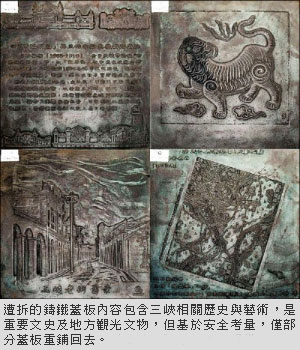
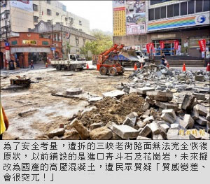

2016國少運動會將登場 接待大使導覽能力訓練
蘇春瑛｜台灣新生報／地方綜合｜2016年6月10日
二○一六國際少年運動會（簡稱ICG）將於七月十一日登場，大會自眾學伴中遴選出接待大使擔任貴賓旅遊代表，日前新北市觀光局與教育局體育處攜手帶領接待大使至三峽老街，並由李梅樹紀念館李景文導覽員進行三峽祖師廟及老街百年風華解說，除讓ICG接待大使能更深入了解三峽，增加文化知識，並能在七月貴賓參訪過程中即時交流分享。
觀旅局表示，培訓國際接待大使將以「一校一接待」的方式迎接來自國內外所有貴賓，屆時陪同貴賓參加開閉幕、觀看比賽及體驗三鶯文化相關事宜，促進微型國民外交。秀峰高中高二生梁文馨表示：「很榮幸擔任此次貴賓旅遊接待大使，非常期待與各國選手互動和交流，讓遠來的貴賓感受我們的熱情與活力。」
觀旅局說明，來自國內外八十三個城市，二千位選手及貴賓參與，期間能對新北市留下深刻印象，規劃出兩類城市文化旅遊行程，一是參與七月十三日鶯歌半日遊或七月十四日三峽體驗遊；另推薦適合賽事前或賽後體驗的十三條大台北地區半日遊與六條台灣一日遊自費路線。